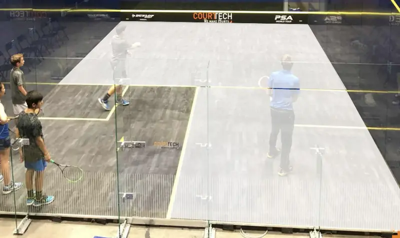

How Do You Play 3/4 Court in Squash?
Three quarter court is played using only the front half of the court and one of the back quarters. It’s used when groups want to play competitive rallies.
It’s possible to play full court rallies with 2, 3 and even 4 people – and I don’t mean doubles – by having the third and forth players stand against the back wall on the half-court line and move along the wall, depending on where the ball goes. The problem is that it can be a little dangerous if the two at the back are not paying attention and also a little distracting for the players.
So the simple solution is 3/4 court. Usually, the winner of the point receives serve, but I have seen it played the other way around. It’s a good solution for large groups who want to play competitive rallies instead of training drills. I’ve seen it scored, although most times that’s not needed. To make sure there are no misunderstanding, here is an image of the allowed area.
For all the versions I have used, the ball MUST bounce twice inside the highlighted area. Notice the other players patiently waiting their turn to try to beat the receiver. Of course, after a set number of points, players swap sides.
I vividly remember taking a Middlesex (An English county) squad onto the glass court at the British Open in Wembley one year. All 8 of the players got a chance to play on the court for nearly 40 minutes, instead of just watching from outside. Playing on a glass court back then was a rare opportunity, unlike today.
Want Me To Be Your Coach?
Send me a 5-minute video of you playing and you receive a 20-minute analysis video and PDF summary.
Full details, including the price, can be found on the Services page.
What Are The Benefits Of Playing 3/4 Court?
Firstly, it allows lots of people to play competitive rallies. But more importantly it develops good tactical habits. It’s essentially a conditioned game and can easily be played with just two players on court. Firstly, a lot of the shots are straight drives. Because both players know that you can’t hit crosscourts from the back, the quality of straight drive must be higher than in full court games otherwise you shot will easily be volleyed. Next it allows you to practice straight drops from the back, or at least play short from the back. finally, for this short article at least, it helps develop your crosscourt lob from the front.
If one player is significantly stronger than the others, additional conditions can be applied. For example, they can’t volley, or can only hit the ball to the front with a boast, or finally they can only drop straight when at the front.
Any Drawbacks?
When the size of the group gets too large, I personally prefer players to be split into smaller groups and have the non-court group doing something else; balancing drills, skill work, watching PSA matches for specific things etc. My reasoning is that for adults, the time standing around is a time to get cold. For juniors it’s not so important, but I’ve seen squads where the non-players have to do physical exercises, which can be fun and beneficial. But overall, it’s a good sue of space and time for most standards of players.
Final Thoughts
As I have mentioned, the 3/4 court can is great for developing good tactical habits, so play it when there is just two players on court. It can also highlight weaknesses that might take longer to appear. For example, one side might have a weaker lob that the other, but in this game you have to play it more often, you see it more clearly.